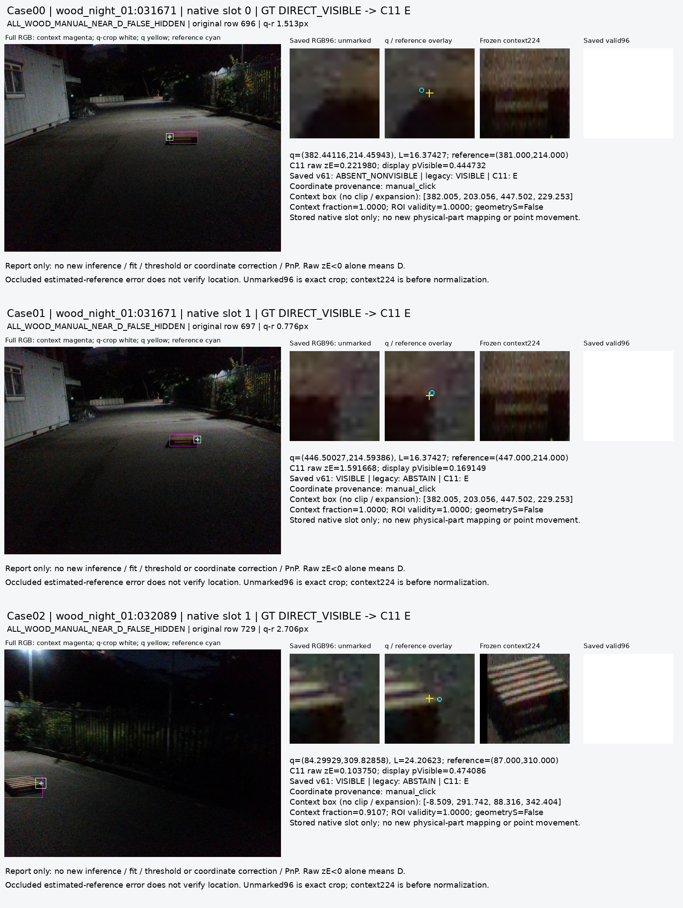
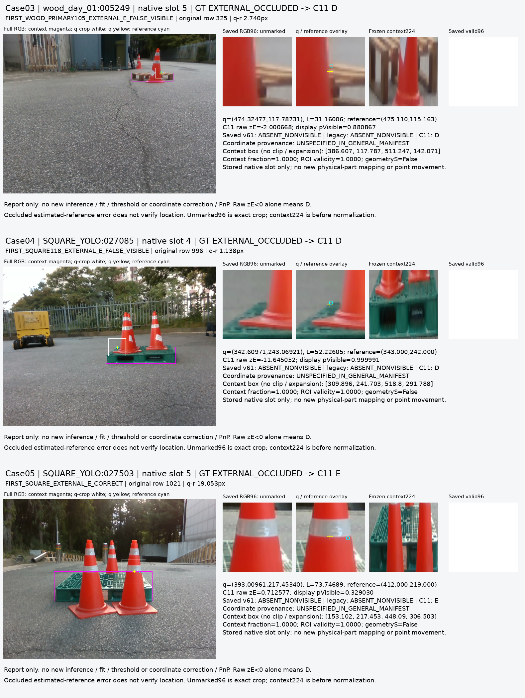

가시점은 더 잘 보존했다.
외부 가림은 아직 충분히 찾지 못했다.
C11은 같은 q 비교에서 가시 D를 WOOD 598/616, SQUARE 531/531개 보존했다. 하지만 외부 가림 E는 WOOD 11/29, SQUARE 44/61개를 D로 놓쳤다. 목표는 미완료이며, 기존 모델의 범용 대체를 선언할 결과가 아니다.
source에서 고른 step1800과 raw logit0을 current223 및 별도 fresh V112 평가 전에 고정했다. z<0이면 D, z≥0이면 binary hidden 응답이다. 아래 결과로 C11과 C1 중 후보를 다시 선택하지 않는다.
같은 q·RGB에서의 D / 외부 E 비교
사전 정의된 paired_same_query_RGB 묶음이다. CM의 행은 실제 D, 실제 외부 E이며, 열은 예측 D·hidden·U이다. E 정밀도는 이 D/E 묶음 안에서 계산한다. hidden 응답이 외부 원인이나 self를 식별했다는 뜻은 아니다.
| 대상 | 모델 | GT D / E | CM: D행 / E행 | D 정밀도 / 재현율 | E 정밀도 / 재현율 | U |
|---|---|---|---|---|---|---|
| WOOD | v61 | 616 / 29 | [145, 471, 0] [0, 29, 0] | 100.0% / 23.5% | 5.8% / 100.0% | 0/645 0.0% |
| WOOD | legacy | 616 / 29 | [448, 65, 103] [2, 23, 4] | 99.6% / 72.7% | 26.1% / 79.3% | 107/645 16.6% |
| WOOD | C11 raw | 616 / 29 | [598, 18, 0] [11, 18, 0] | 98.2% / 97.1% | 50.0% / 62.1% | 0/645 0.0% |
| SQUARE | v61 | 531 / 61 | [115, 416, 0] [2, 59, 0] | 98.3% / 21.7% | 12.4% / 96.7% | 0/592 0.0% |
| SQUARE | legacy | 531 / 61 | [207, 254, 70] [1, 60, 0] | 99.5% / 39.0% | 19.1% / 98.4% | 70/592 11.8% |
| SQUARE | C11 raw | 531 / 61 | [531, 0, 0] [44, 17, 0] | 92.3% / 100.0% | 100.0% / 27.9% | 0/592 0.0% |
모든 원래 분모와 legacy 보류 U를 유지했다. U는 recall 분모에 남는다. 가시 D를 덜 버리는 대신 외부 E를 놓치는 비율이 여전히 크다. 특히 SQUARE의 E 정밀도100%는 E17개만 찾은 결과이며 E 재현율27.9%를 상쇄하지 않는다.
같은 slot의 전체 파이프라인 비교
same_slot_pipeline은 위와 별도의 고정 묶음이다. WOOD의 D626/E30을 유지하며, 같은 q 묶음의 D616/E29와 합치거나 유리한 분모로 바꾸지 않는다. 아래도 raw binary 응답이며 기하 self 경로는 다음 절에서 분리한다.
| 대상 | 모델 | GT D / E | CM: D행 / E행 | D 정밀도 / 재현율 | E 정밀도 / 재현율 | U |
|---|---|---|---|---|---|---|
| WOOD | v61 | 626 / 30 | [154, 472, 0] [1, 29, 0] | 99.4% / 24.6% | 5.8% / 96.7% | 0/656 0.0% |
| WOOD | legacy | 626 / 30 | [448, 65, 113] [2, 23, 5] | 99.6% / 71.6% | 26.1% / 76.7% | 118/656 18.0% |
| WOOD | C11 raw | 626 / 30 | [607, 19, 0] [12, 18, 0] | 98.1% / 97.0% | 48.6% / 60.0% | 0/656 0.0% |
| SQUARE | v61 | 531 / 61 | [115, 416, 0] [2, 59, 0] | 98.3% / 21.7% | 12.4% / 96.7% | 0/592 0.0% |
| SQUARE | legacy | 531 / 61 | [207, 254, 70] [1, 60, 0] | 99.5% / 39.0% | 19.1% / 98.4% | 70/592 11.8% |
| SQUARE | C11 raw | 531 / 61 | [531, 0, 0] [44, 17, 0] | 92.3% / 100.0% | 100.0% / 27.9% | 0/592 0.0% |
입력 U, 근접 가시점, 기하 self는 구분한다
223frame × 8slot = 1784행을 모두 유지했다. 유효1739행, 기존 입력 U45행(WOOD40·SQUARE5), 추가 operator U0행이다. 위 D/E 묶음의 C11 U는0이며, legacy 보류를 제거해서 얻은 비교가 아니다.
| 수동 클릭 D · 유효 q · q-r≤3px | WOOD D 보존 / 153 | SQUARE D 보존 / 223 |
|---|---|---|
| v61 | 42/153 | 43/223 |
| legacy | 116/153 | 89/223 |
| C11 raw | 150/153 | 223/223 |
기존 초기 기하 self 경로는 WOOD human S136개 중115개를 flag했다. 동시에 human D10개와 외부 E1개도 self로 flag했다. SQUARE에는 human S 정답이 없다. 이는 learned S 성능이나 정확한 원인 판별이 아니다. 같은 q D/E 묶음에서는 geometry flag가0이므로 raw 결과와 기하 경로 결과가 같다.
source 통과와 current 전이는 다른 결과다
고정된8개 VAL cohort BCE의 엄격한 최초 최소값으로 step1800을 선택했다(BCE0.02917). source12개 gate는 모두 통과했다. 원 q/L을 바꾸거나 정답 좌표로 crop을 옮기지 않았다.
| 저장 source 묶음 | CM D행 / E행 | D 재현율 | E 재현율 | BEFORE/COVER/SHAM 모두 정답 |
|---|---|---|---|---|
| 기존 public VAL | [147, 5, 0] [3, 118, 0] | 96.7% | 97.5% | 111/119 |
| 합성 VAL | [209, 0, 0] [0, 34, 0] | 100.0% | 100.0% | 32/32 |
| YCB TRAIN만 | [1181, 0, 0] [0, 340, 0] | 100.0% | 100.0% | 해당 없음 |
기존 public VAL의 COVER는116/119, SHAM은114/119, 자연 BEFORE E는2/2이다. 119개 rank triplet은18개 base query·9개 image에 군집하며, 자연 E2개도 같은 영상이다. 합성 VAL32/32와 YCB TRAIN1181D·340E 정답은 자연 실영상의 독립 hold-out 성공을 뜻하지 않는다. YCB VAL은0개이다.
source는 공개영상의 조건부 AUX, 합성 expected-cue, reference-associated surface proxy가 섞인 라벨이다. human/native junction gold가 아니며 native 연결은 UNKNOWN을 유지한다. V99/V109의 q는 source-emulated q이다. 이번에는 backbone과 spatial target/query 표현이 함께 바뀌었으므로, 표현 하나가 개선의 원인이라고 분리해 주장할 수 없다.
고정한 실제 crop에서 남은 오류를 확인했다
postfit 보고용6개 사례를 고정하고 원 RGB96, 원 q/L, reference, 동결 context를 그대로 확인했다. 모델을 다시 실행하거나 좌표·주석·threshold를 바꾸지 않았다. 원 RGB96와 표시용 확대/마커는 구분되어 있다.


가려진 reference는 추정 좌표일 수 있다. E 사례의 q-r이1–3px라는 사실만으로 위치가 올바르다고 인증하지 않는다. native 부품 대응과 target association의 불확실성은 남겨 두며, 이6개 오류 선택 사례로 전체 오류의 빈도나 원인을 추정하지 않는다.
이번 결과가 뒷받침하는 범위
- source 학습·checkpoint·threshold·normalizer 선택에 current223을 쓰지 않았다. source 동결 후 실제 current 추론과 saved 평가를1회 수행했다. 이 보고서의 추가 model forward·fit·q 보정·PnP는0이다.
- current223은 반복 개발에 노출된 기존 묶음이다. 독립적인 새 hold-out 검증으로 해석하지 않으며, private 성능으로 C11과 C1을 다시 고르지 않는다.
- 기존 기하 self 필터와 learned D/E 응답은 분리한다. S를 외부 E 정답으로 합치거나, 입력 U·unknown/native 대응을 음성 라벨로 바꾸지 않는다.
- source와 current의 라벨 정의·입력 문맥·영상 분포 차이를 보존한다. source gate 통과와 saved 감사 PASS는 범용 전이·좌표 정확성의 증명이 아니다.
고정 source12개 gate와 저장 검토
| 사전 고정 gate | 관측값 | 기준값 | 결과 |
|---|---|---|---|
| old_LOCO_before_D_recall_min | 100.0% | 85.0% | PASS |
| old_PALLOX_before_D_recall_min | 100.0% | 85.0% | PASS |
| old_natural_before_E_recall_min | 100.0% | 75.0% | PASS |
| old_sham_D_recall_min | 95.8% | 85.0% | PASS |
| old_cover_E_recall_min | 97.5% | 75.0% | PASS |
| old_accepted_VAL_pair_all3_min | 93.3% | 75.0% | PASS |
| old_known_VAL_U_rate_max | 0.0% | 5.0% | PASS |
| new_BEFORE_D_recall_min | 100.0% | 85.0% | PASS |
| new_SHAM_D_recall_min | 100.0% | 85.0% | PASS |
| new_COVER_E_recall_min | 100.0% | 75.0% | PASS |
| new_selected_VAL_pair_all3_min | 100.0% | 75.0% | PASS |
| new_known_VAL_U_rate_max | 0.0% | 5.0% | PASS |
이름의 min은 이상, max는 이하 기준이다. 모든 gate·라벨·대상·step1800을 current 결과 후에도 그대로 유지한다.
전체 수치·정의·SHA 기록 · source saved 검토 · current saved 독립 검토 · 원 평가표 · 실제 crop 관찰